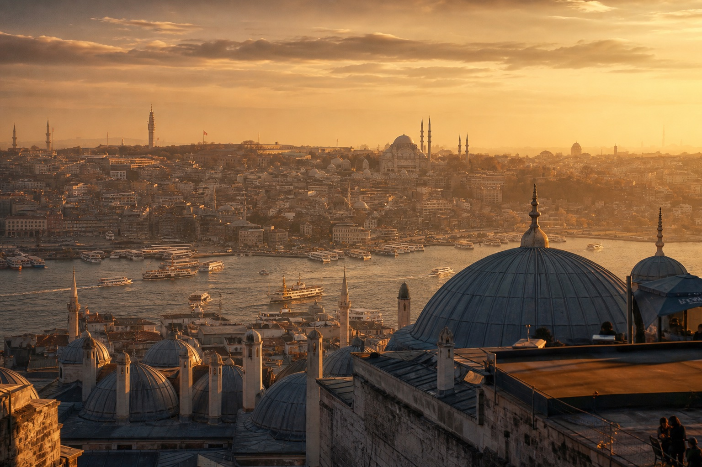
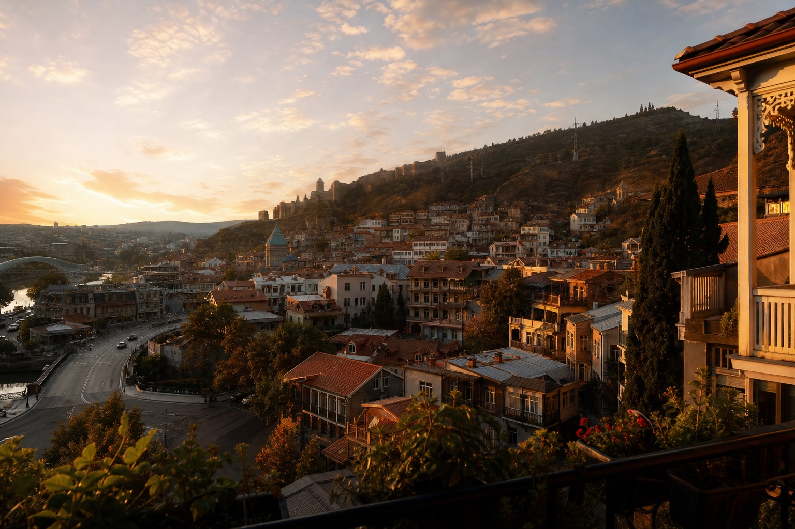
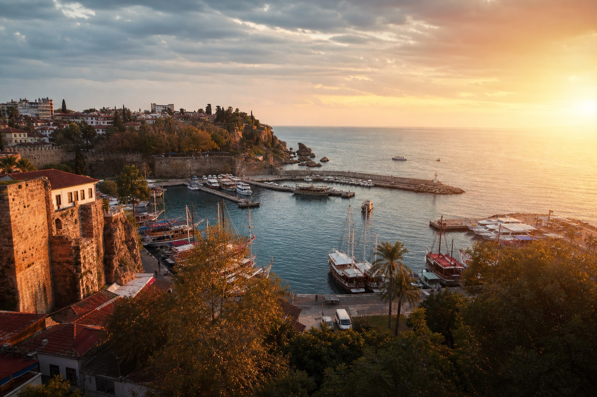
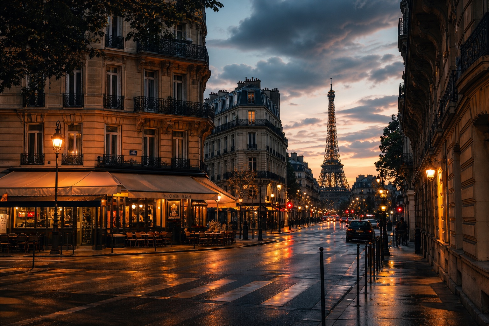
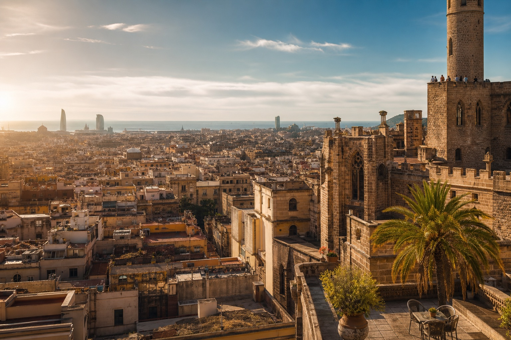

Featured · Istanbul
48 часов в Стамбуле
Два континента, паромы на рассвете и ужин над Босфором.
Читать историю ↗
Digital travel guide · 2026
Atlas — travel-гид с красивыми локациями, ресторанами, полезными местами и готовыми маршрутами по городам мира.
01 · Направления
02 · Истории
Два континента, паромы на рассвете и ужин над Босфором.
Читать историю ↗
Тбилиси · 7 минут
Анталья · 9 минут
Париж · 6 минут03 · Места
04 · Маршруты
05 · Atlas Intelligence
06 · Карта

Следующая поездка начинается здесь